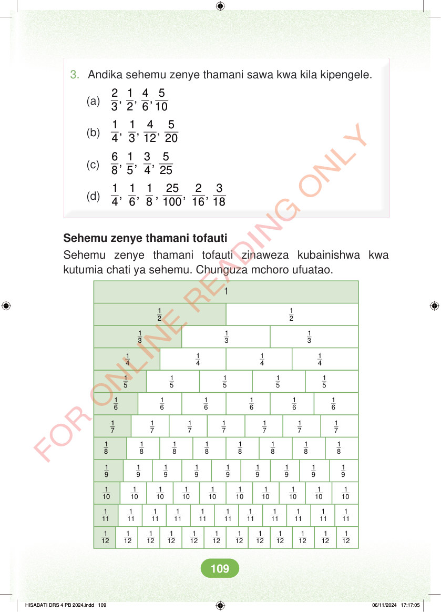

3. Andika sehemu zenye thamani sawa kwa kila kipengele. 2 1 4 5 , , , 3 2 6 10 (a) 1 1 4 5 , , , 4 3 12 20 (b) 6 1 3 5 , , , 8 5 4 25 (c) 1 1 1 25 2 3 , , , , , 4 6 8 100 16 18 (d) Sehemu zenye thamani tofauti Sehemu zenye thamani tofauti zinaweza kubainishwa kwa kutumia chati ya sehemu. Chunguza mchoro ufuatao. 1 2 1 2 1 3 1 3 1 3 1 4 1 4 1 4 1 4 1 5 1 5 1 5 1 5 1 5 1 6 1 6 1 6 1 6 1 6 1 6 1 7 1 7 1 7 1 7 1 7 1 7 1 7 1 8 1 8 1 8 1 8 1 8 1 8 1 8 1 8 1 9 1 9 1 9 1 9 1 9 1 9 1 9 1 9 1 9 1 10 1 10 1 10 1 10 1 10 1 10 1 10 1 10 1 10 1 10 1 11 1 11 1 11 1 11 1 11 1 11 1 11 1 11 1 11 1 11 1 11 1 12 1 12 1 12 1 12 1 12 1 12 1 12 1 12 1 12 1 12 1 12 1 12 HISABATI DRS 4 PB 2024.indd 109 HISABATI DRS 4 PB 2024.indd 109 06/11/2024 17:17:05 06/11/2024 17:17:05